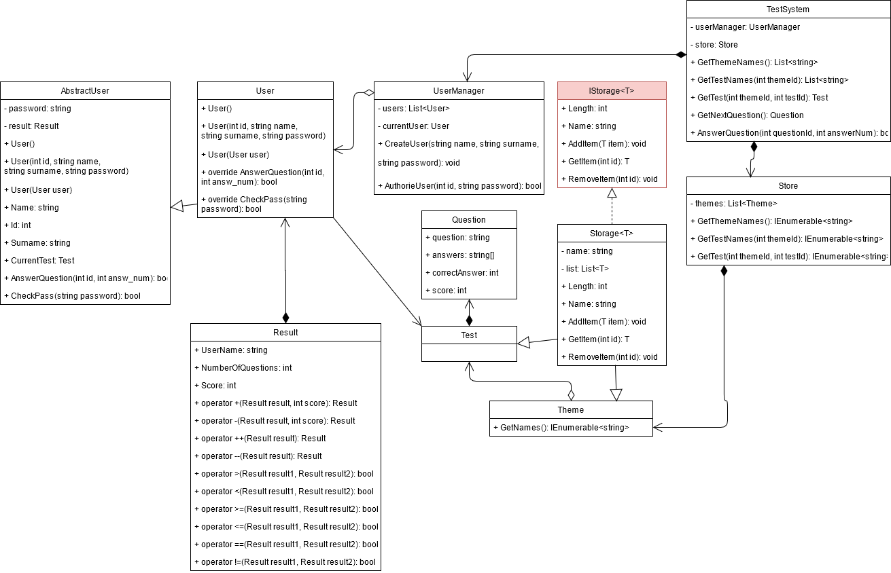
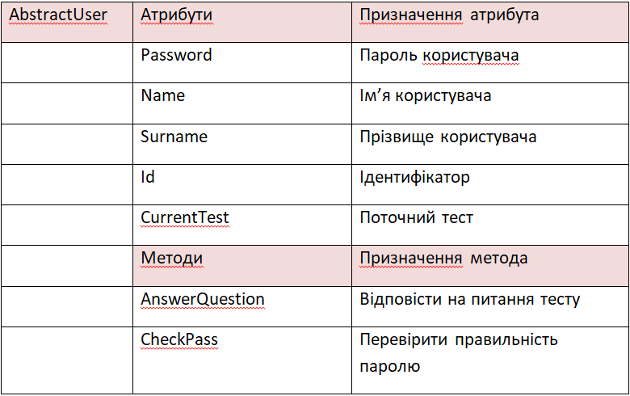
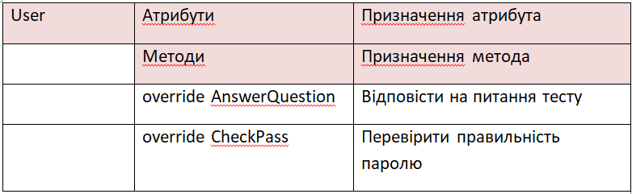

Тема: ВИКЛЮЧНІ СИТУАЦІЇ.
Мета: придбати практичні навички роботи з виключними ситуаціями, які виникають при роботі програми.
Постановка задачі:
- 1. Доповнити програмну реалізацію класів виключеннями при некоректній авторизації, виключеннями з фільтрами.
- 2. Реалізувати виключення, що виникають при обробці масивів, обробку системних виключень.
- 3. Протестувати програму. Зробити висновки.
UML-діаграма класів проекту
Таблиця класів
 

Виключення при некоректній авторизації
Створення власного виключення RegistrationException

Створення власного виключення AuthorizeException

Генерація виключення

Обробка виключення

Виключення з фільтрами
Обробка иключення з використанням фільтру

Виключення при обробці масивів
Генерація виключень при обробці масивів

Обробка виключення при діленні на 0 та діленні масивів різної довжини
Обробка виключення при перевищенні меж границь масиву

Системні виключення
Генерація виключеня ArgumentOutOfRangeException

Обробка виключень ArgumentException, ArgumentOutOfRangeException

Обробка виключення NullReferenceException

Результат обробки виключення при реєстрації користувача

Результат обробки виключення

Папка з проектом
Папка з проектомЗапуск exe-файлу
Завантажити програмуВисновки
У даній лабораторній роботі були придбані практичні навички роботи з виключними ситуаціями. Були опановані та реалізовані на практиці методи обробки виключень. Створені та проаналізовані власті виключення.